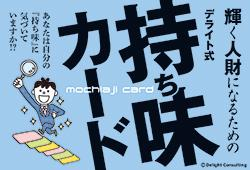
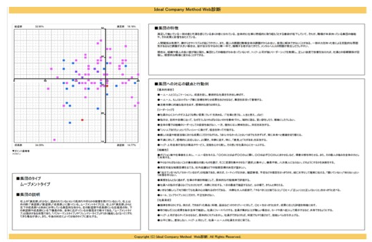
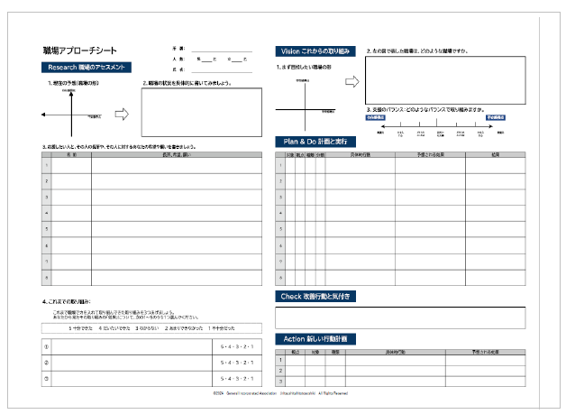
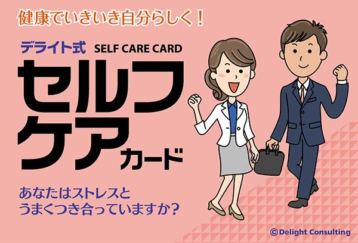
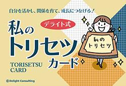
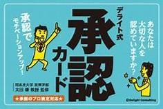

持ち味カード
一人ひとりが持っている 自分の強みや持ち味に気づき、 個人の成長につなげます。
HUMAN & ORGANIZATION
「人」が成長し、
「組織」が成長する。
APPROACH
人材育成や組織づくりは、 知識を教えるだけでは十分ではありません。
一人ひとりが自分自身の持ち味を理解し、 自分と周囲の関係性を知り、 組織の中で自分らしく力を発揮できる環境を つくることが大切だと考えています。
リベレストでは、 「自立型人財組織育成士」としての学びや 人材・組織づくりに関する知見を活かし、 「人」と「組織」の両面から支援します。
ICM
組織の「今」を知ることから始めます。
組織づくりにおいて重要なのは、 現在の組織がどのような状態にあるのかを 正しく把握することです。
ICM（Ideal Company Method）では、 「人」と「組織」の状態を サーベイによって可視化します。
個人と組織の状態を把握することで、 現在抱えている課題や、 組織の中にある強みを整理していきます。
サーベイによって見えてきた情報をもとに、 組織内のコミュニケーションや 人材育成について考えるきっかけをつくります。

WORKPLACE IMPROVEMENT
「調べて終わり」にはしません。
サーベイによって組織の状態を把握した後は、 必要な改善について一緒に考えていきます。
企業ごとに課題や状況は異なります。 そのため、サーベイの結果を踏まえながら、 今の会社に必要な改善テーマを整理します。

CARD SUPPORT
難しい理論だけではなく、 カードを活用しながら、 一人ひとりが自分自身や周囲との関係に 気づきを持てるよう支援します。

一人ひとりが持っている 自分の強みや持ち味に気づき、 個人の成長につなげます。

自分自身の状態に気づき、 自分を大切にしながら より良い働き方につなげます。

自分と相手の違いを理解し、 お互いの特徴を活かした 関係づくりを支援します。

お互いの存在や強みに気づき、 認め合うことを通じて 組織のコミュニケーションを支援します。
カードという身近なツールを活用することで、 「人」と「組織」について考えることを よりわかりやすく、取り組みやすくします。
一人ひとりの気づきが、 組織のコミュニケーションや 成長につながることを目指します。
一般社団法人 個を活かす組織づくり支援協会
認定
PROCESS
ICMによるサーベイなどを通じて、 個人と組織の状態を把握します。
サーベイ結果やカードなどを活用し、 自分自身や周囲との関係、 組織について考えます。
気づきを具体的な行動や 職場改善につなげ、 人と組織の成長を支援します。
LIBEREST APPROACH
人材育成というと、 「社員をどう変えるか」という視点に なりがちです。
しかし、社員一人ひとりが持っている 強みや価値観を理解し、 それを活かせる環境をつくることも 組織づくりには重要です。
リベレストでは、労務管理・人材育成・ 組織づくりを別々のものとして考えるのではなく、 「人」と「組織」を一体として捉え、 会社の成長を支援します。
人が活きる。
組織が活きる。
そして、会社が成長する。
CONTACT
「何から始めればいいのかわからない」
「組織の状態を一度確認してみたい」
「社員同士の関係を良くしたい」
「人が活きる会社をつくりたい」
そんな段階でも構いません。
現在の状況を一緒に整理するところから始めます。
CONTACT
「社員をもっと成長させたい」 「組織を良くしたい」 「人材育成について相談したい」 など、具体的な課題が決まっていない段階でも構いません。
現在の状況を一緒に整理するところから始めます。
お問い合わせ・ご相談CONTACT
「社員をもっと成長させたい」 「組織を良くしたい」 「人材育成について相談したい」 など、具体的な課題が決まっていない段階でも構いません。
現在の状況を一緒に整理するところから始めます。
お問い合わせ・ご相談